An example showing how to build a generative art system in R. The post walks through some of the creative and design choices that are involved, and highlights how much of a trial-and-error process generative art can be
Almost two years (2020-01-15) ago I wrote this blog post as an introduction to generative art in R. The idea behind the post was to start making a new generative art system from scratch, and write the blog post at the same time. By doing it that way the reader can see how the process unfolds and how many false starts and discarded ideas a generative artist tends to go through, even for a simple system like this one. The post disappeared when I moved my blog to its own subdomain and its own repository, but I’ve now managed to rescue it! Hope it’s helpful…
Introduction
Over the last year or so I’ve taken up generative artwork as a hobby, and I am occasionally asked to write an introduction to the subject… how does one get started in generative art? When I started posting the code for my generative art to my “rosemary” repository I has this to say about my subjective experience when making artwork,
Making generative artwork reminds me a lot of gardening. Both are aesthetic exercise, creating a pleasant and relaxing evironment that the artist/gardener can enjoy no less than anyone visiting the space. Both are hard work, too. Learning how to prune, learning which plants will thrive in the land that you have, knowing what nutrients differnt plants need, taking care of the garden in hard times, et cetera, none of these are easy. At the end you might have a sustainable native garden that blends in seamlessly with the environment and brings you joy, but growing the garden is itself a technical and sometimes physically demanding exercise. The analogy between gardening and generative artwork feels solid to me, but it’s not amazingly helpful if you want to start making this kind of art. If you want to start gardening, you probably don’t really want a fancy gardener to talk about their overall philosophy of gardens, you’d like a few tips on what to plant, how often to water and so on. This post is an attempt to do that, and like so many things in life, it is entirely Mathew Ling’s fault.
The first thing to say about generative artwork is that it’s really up to you how you go about it. I do most of my programming using R, so that’s the language I use for my artwork. Most of the artwork I’ve been making lately has relied on the ambient package for the “generative” component, but to be honest you don’t have to rely on fancy multidimensional noise generators or anything like that. You can use the standard pseudorandom number generators built into R to do the work. Since the point of this post is to talk about “how to get started”, this is exactly what I’ll do!
In fact, what I’m going to do in this post is build a new system for generative art… I’m not sure what I’m going to end up with or if it will be any good, but let’s see where it goes! For the purposes of this post I’m assuming that you’re somewhat familiar with the tidyverse generally and ggplot2 specifically, and are comfortable writing functions in R. There’s a couple of spots where I do something slightly more complex, but I’ll explain those when they pop up. So, here goes…
Do something, anything
Truth be told, I almost never have a plan when I start building a new system. What I do is start playing with pictures that visualise random data in some fashion, and see where that takes me. So, okay… I’ll start out creating a data frame that contains random numbers: each row in the data frame is a single “point”, and each column specifies an attribute: an x variable specifying a horizontal co-ordinate, a y variable specifying the vertical location, and a g variable that randomly assigns each of point to a “group” of some kind. At this point in time I have no idea how I’m going to use this information:
library(tidyverse)set.seed(1)obj <-tibble(x =rnorm(100), y =rnorm(100), g =sample(10, 100, TRUE))obj
# A tibble: 100 × 3
x y g
<dbl> <dbl> <int>
1 -0.626 -0.620 1
2 0.184 0.0421 3
3 -0.836 -0.911 10
4 1.60 0.158 7
5 0.330 -0.655 4
6 -0.820 1.77 1
7 0.487 0.717 9
8 0.738 0.910 7
9 0.576 0.384 6
10 -0.305 1.68 4
# … with 90 more rows
Something to note about this code is that I used set.seed(1) to set the state of the random number generator in R. This will ensure that every time I call the same “random” code I will always get the same output. To get a different output, I change the seed to something different.
So I guess the first thing I’ll do is try a scatterplot:
ggplot(obj, aes(x, y, colour = g)) +geom_point(show.legend =FALSE) +coord_equal() +theme_void()
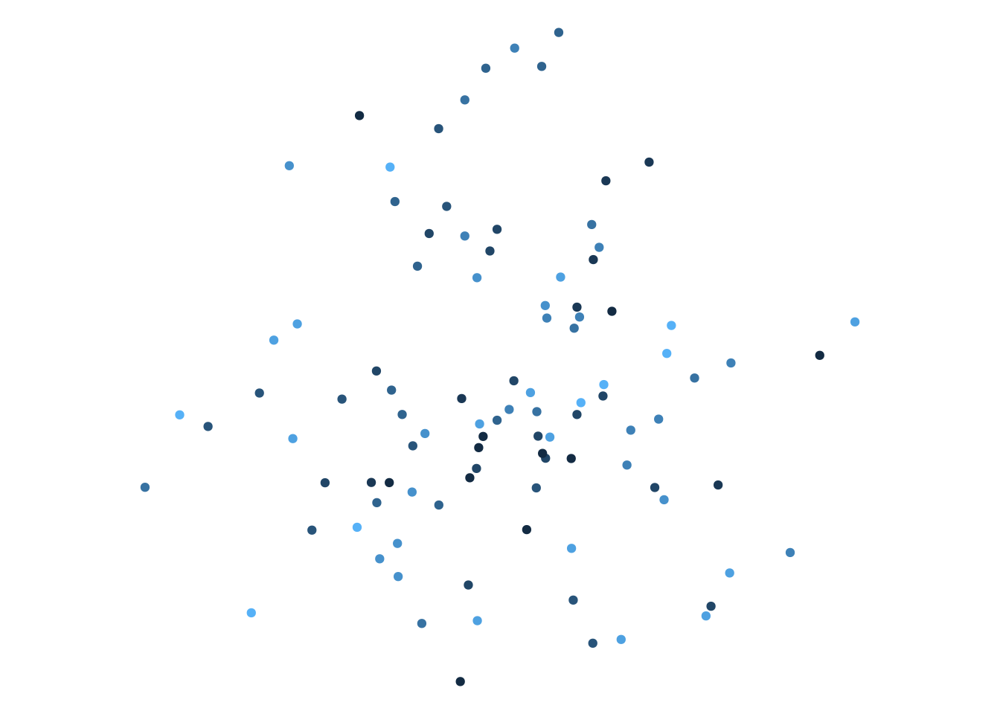
Okay, yeah that’s scatterplot. I’m not feeling inspired here, but it does occur to me that I’ve seen some very pretty hexbin plots in the past and maybe there’s some fun I could have playing with those?
Hm. Interesting? Maybe I could split this by group and try overlaying different hexagonal shapes? That sometimes makes for a neat three-dimensional feel when two hexagonal grids are offset from one another… okay let’s pursue that for a bit…
[an hour passes in which I draw many boring plots]
…yeah, okay I’ve got nothing. It seemed like a good idea but I couldn’t make anything I really liked. This is, in my experience, really common. I go down quite a few blind alleys when making a generative system, discard a lot of things that don’t seem to do what I want. It’s an exploration process and sometimes when you explore you get lost. Oh well, let’s try something else. Instead of drawing a scatterplot, let’s connect the dots and draw some lines:
ggplot(obj, aes(x, y, colour = g)) +geom_path(show.legend =FALSE) +coord_equal() +theme_void()
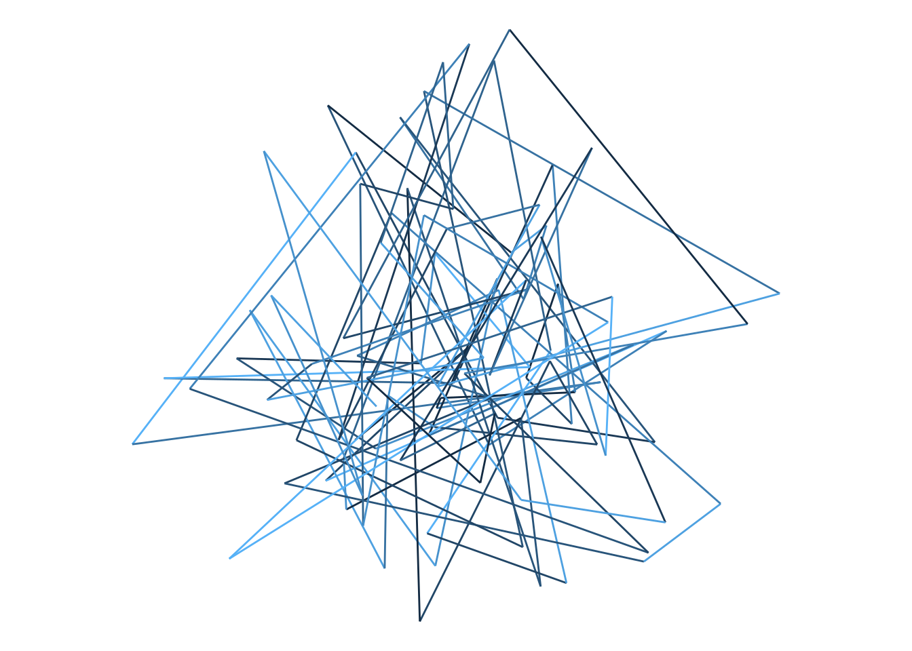
Hm. A bit scribbly, but there’s something aesthetically pleasing there. Okay, what if I decided to turn the paths into polygons?
ggplot(obj, aes(x, y, fill = g, group = g)) +geom_polygon(show.legend =FALSE) +coord_equal() +theme_void()
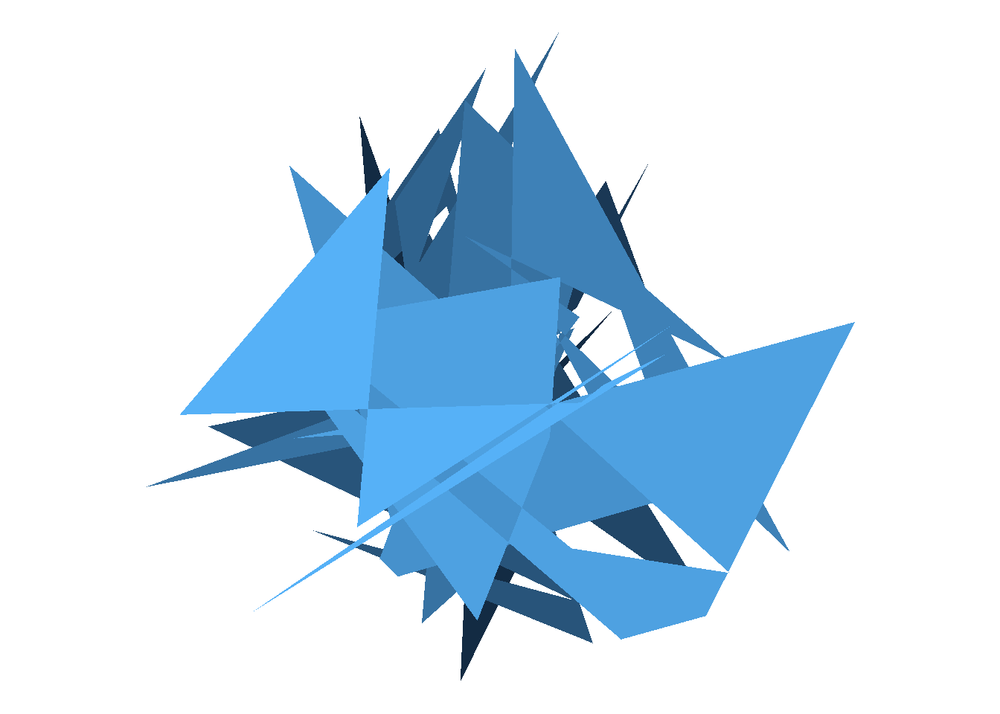
Okay, this feels promising. It reminds me a bit of the time I accidentally drew some really pretty pictures by setting axis limits inappropriately when drawing kernel density estimates with ggplot2, and ended up using it as a way to explore the scico package. Let’s run with this…
Mix it up a bit
To try to get a sense of what you can do with a particular approach, it’s usually helpful to try out some variations. For example, the previous plot uses the ggplot2 default palette, which isn’t the most appealing colour scheme. So let’s modify the code to use palettes from the scico package. One of my favourites is the lajolla palette:
library(scico)ggplot(obj, aes(x,y, fill = g, group = g)) +geom_polygon(show.legend =FALSE) +coord_equal() +theme_void() +scale_fill_scico(palette ="lajolla")
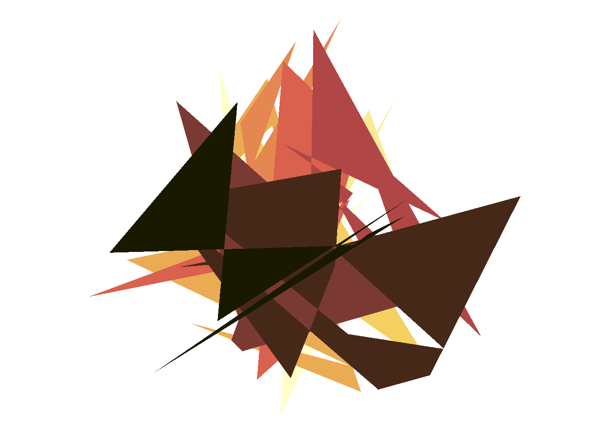
This is definitely neat. I do like the “jagged little polygons” feel to this, but to be honest I’m getting a bit bored. I’ve done a few different art pieces that exploit this effect before, and this isn’t the most exciting thing for me, so I want to push things in a different direction. Speaking of which, I’m not sure I want all the polygons to lie on top of each other so much, so what I’ll do is create a small tibble called grp that specifies a random “offset” or “shift” for each group, and then using full_join() from dplyr to merge it into the data object:
So now I can adjust my ggplot2 code like this. Instead of defining each polygon in terms of the x and y columns, I’ll add the x_shift and y_shift values so that each polygon gets moved some distance away from the origin. This is kind of helpful, because now I can see more clearly what my objects actually look like!
ggplot(data = obj, mapping =aes(x = x + x_shift, y = y + y_shift, fill = g, group = g )) +geom_polygon(show.legend =FALSE) +coord_equal() +theme_void() +scale_fill_scico(palette ="lajolla")
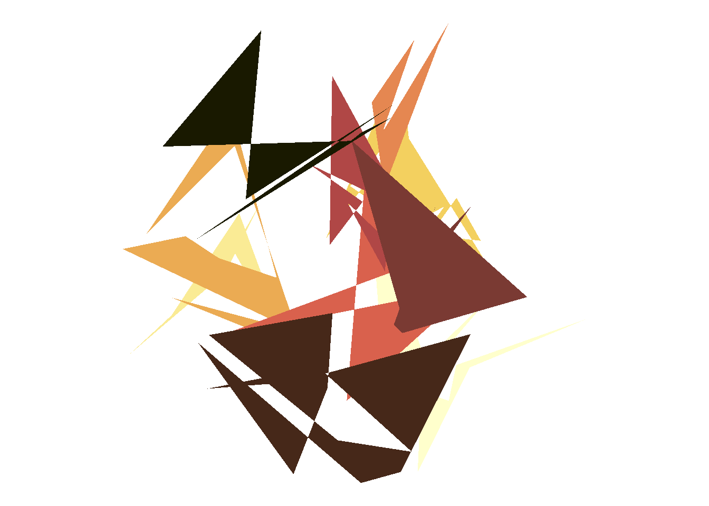
Very pretty! But as I said, I’m bored with the “jagged little polygon” look, so what I want to do is find some way of changing the appearance of the shapes.
CRAN is a girl’s best friend
At this point in my process I was a bit lost for ideas. I want to do something different, and I think what I want to do is turn each point set into more of a regular shape, something without holes in it. It then occurred to me that way back in 1998 I did my honours thesis on combinatorial optimisation problems in neuropsychological testing and had played around with things like the Travelling Salesperson Problem (TSP) and remembered that the solutions to two-dimensional planar TSPs can sometimes be quite pretty. A few minutes on google uncovers the TSP package, and a few more minutes playing around with the API gives me a sense of what I need to do in order to work out what order to connect the points in order to generate a TSP solution:
The code here is very ugly because I wrote it in a rush. The gist of it is that what you want to do normally is feed a data frame to the ETSP() function, which creates the data structure needed to solve the corresponding optimisation problem. The output is then passed to solve_TSP() which can produce an approximate solution via one of many different algorithms, and that then returns a data structure (as an S3 object) that specifies the order in which the points need to be connected, along with some handy metadata (e.g., the length of the tour). But I don’t want any of that information, so I use c() and unname() to strip all that information out, append the resulting information to the data object, and then use the arrange() function from the dplyr package to order the data in the desired fashion.
Next, because I want to apply the tour() function separately to each group rather than to compute a TSP solution for the overall data structure, I use group_split() to split the data set into a list of data frames, one for each group, and then map_dfr() to apply the tour() function to each element of that list and bind the results together into a data frame:
Now when I apply the same plotting code to the new data object, here’s what I get:
ggplot(data = obj, mapping =aes(x = x + x_shift, y = y + y_shift, fill = g, group = g )) +geom_polygon(show.legend =FALSE) +coord_equal() +theme_void() +scale_fill_scico(palette ="lajolla")
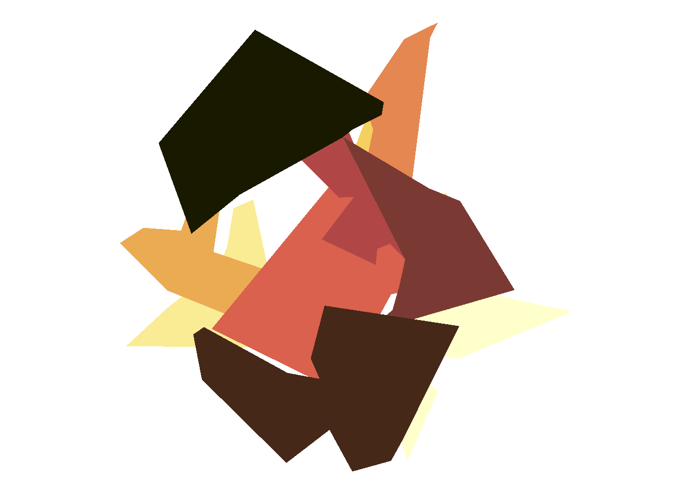
Ooh, I like this.
Formalise a system…
The next step in the process is to take all the moving parts and write a system. The exact details of what consitutes a generative art system is a little vague, but I usually think of it as a collection of functions that capture the essence of the process. If I’m being fancy I’ll convert this set of functions to a full-fledged R package, but let’s not bother with that for this simple system. So what do we need? First, I’ll state the dependencies:
library(tidyverse)library(scico)library(TSP)
Next, let’s keep the tour() function as a separate thing. It’s one way of organising the points that belong to the same group, but there might be others:
tour <-function(obj) { tsp <-ETSP(obj[,c("x","y")]) obj$tour <-unname(c(solve_TSP(tsp)))arrange(obj, order(tour))}
My personal style is to separate the “builder” functions that generate the underlying data structure from the “styling” functions that render that data structure as an image. For the current project, our builder function is build_art() and defined as follows:
build_art <-function(points =100, # total number of pointsgroups =10, # number of groupspolygon = tour, # function used to organise pointsgap =1, # standard deviation of the "shift" separating groupsseed =1# numeric seed to use) {# set the seedset.seed(seed)# create the initial data frame obj <-tibble(x =rnorm(points), y =rnorm(points), g =sample(groups, points, TRUE) )# create the offset for each group grp <-tibble(g =1:groups,x_shift =rnorm(groups) * gap,y_shift =rnorm(groups) * gap )# merge obj with grp obj <-full_join(obj, grp, by ="g") # split obj by group and apply the "polygon" mapping# function separately to each group obj <- obj %>%group_split(g) %>%map_dfr(~polygon(.x))return(obj) # output}
As you can see, it’s more or less the same as the code I developed for my original example, just written with a little more abstraction so that I can feed in different parameter values later. The draw_art() function takes this object as input, and creates a plot using the same ggplot2 code. The only free “parameter” here is the ... that I can use to pass arguments to the palette function:
draw_art <-function(obj, ...) {ggplot(data = obj, mapping =aes(x = x + x_shift, y = y + y_shift, fill = g, group = g ) ) +geom_polygon(show.legend =FALSE) +coord_equal() +theme_void() +scale_fill_scico(...)}
Now we’re ready to go! Because I set it up so that every parameter has a default value that corresponds to the same parameters I used to draw the original picture, this code reproduces the original image:
build_art() %>%draw_art()
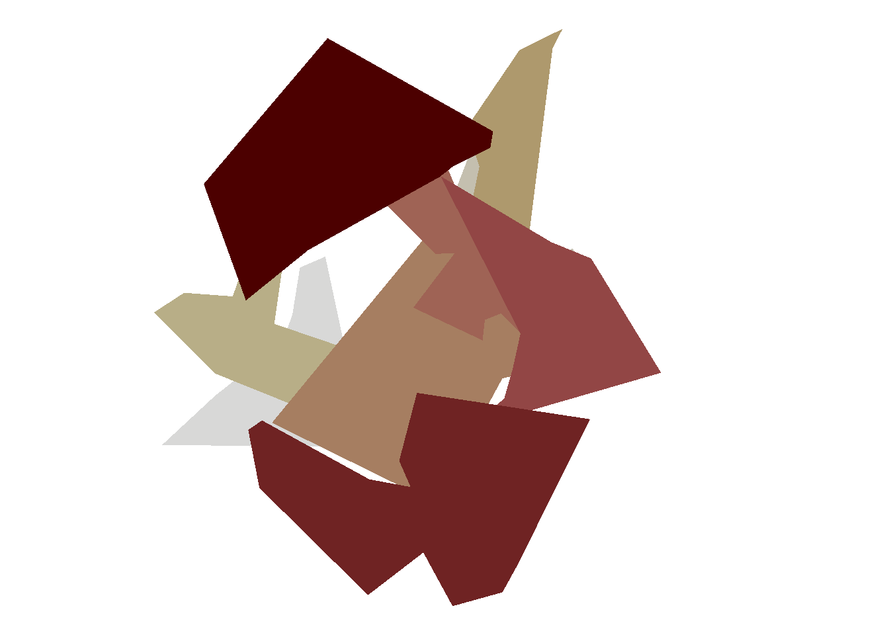
… well, almost!
Vary parameters…
Okay, the one thing that I didn’t do is specify the default palette. In the scico package the default palette is “bilbao”, and the original artwork I produced used the “lajolla” palette. So the default output of the system is identical to this:
build_art(seed =1) %>%draw_art(palette ="bilbao")
If I’d set palette = "lajolla" I’d have obtained exactly the same result as before. But let’s play around a little bit. If I switch to the “vik” palette I get output with the same shapes, just with a different colours scheme:
build_art(seed =1) %>%draw_art(palette ="vik")
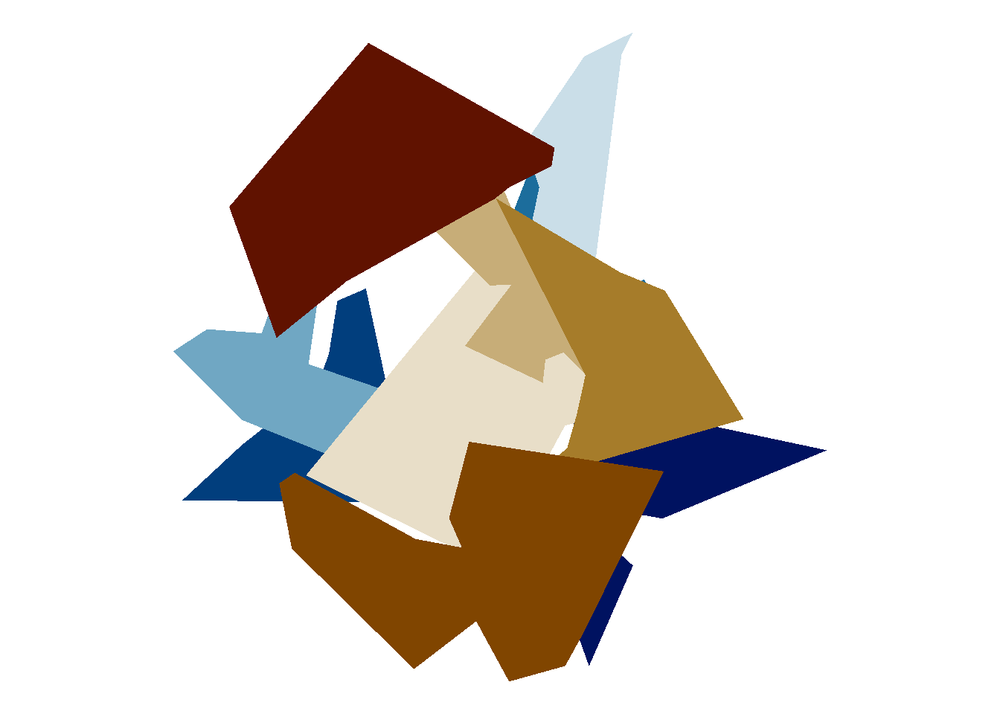
However, if I modify the seed argument as well I get different random points, and so the resulting shapes are different.
build_art(seed =2) %>%draw_art(palette ="vik")
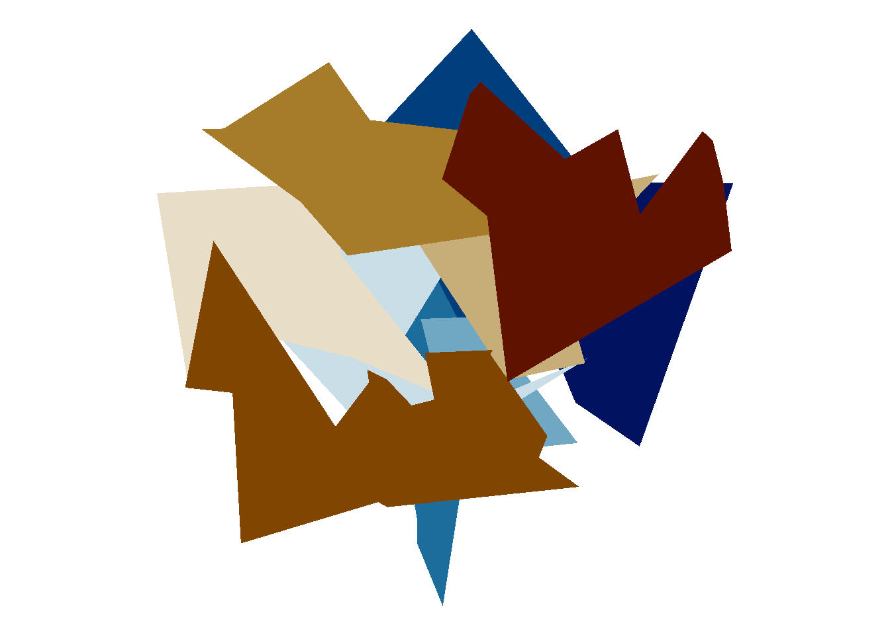
More generally, I can play around with my new system and find out what it is capable of. Here’s a version with 1000 points divided into 5 groups with a fairly modest offset:
The shapes aren’t quite what I was expecting: I’m not used to seeing TSP solutions rendered as polygons, because they’re usually drawn as paths, and they make me think of crazy shuriken or maybe really screwed up snowflakes. Not as organic as I thought it might look, but still neat. Notice that I’ve also made the shapes slightly transparent by setting the alpha argument that gets passed to scale_fill_scico(). Okay, let’s play around a bit more:
This is kind of neat too, but I want to try something different. The general pattern for a TSP solution is that they take on this snowflake/shuriken look when there are many points, but not when there are fewer data points. So this time I’ll have 10000 points in total, but divide them among 1000 groups so that on average each polygon is defined by 10 vertices. I’ll space them out a little bit more too, and…
build_art(points =10000, groups =1000,gap =15, seed =10) %>%draw_art(palette ="tokyo")
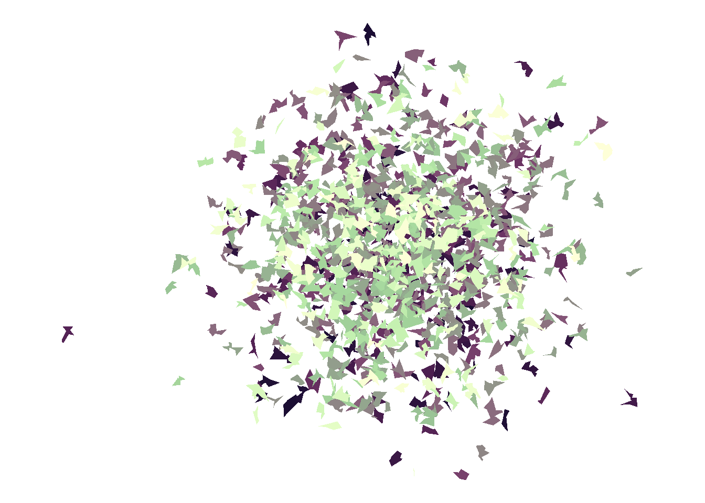
I kind of love it!
Have fun exploiting loopholes
At the beginning, when I created the system, I set tour() to be the default polygon function used to modify each polygon. My original plan was that this function was really just supposed to be used to order the points, but there’s actually nothing in the system that prevents me from doing something fancier. For example, here’s a sneaky trick where the function calls dplyr::mutate()before passing the data for that group to the tour() function. In this case, what I’ve done is a dilation transformation: the overall size of each group is multiplied by the group number g, so now the shapes will lie on top of each other with different scales. It also, in another slightly sneaky trick, flips the sign of the group number which will ensure that when the data gets passed to draw_art() the order of the colours will be reversed. The result…
shift_tour <-function(obj) { obj %>%mutate(x = x * g, y = y * g, g =-g ) %>%tour()}build_art(points =5000,groups =200,gap =0,polygon = shift_tour) %>%draw_art(palette ="oslo")
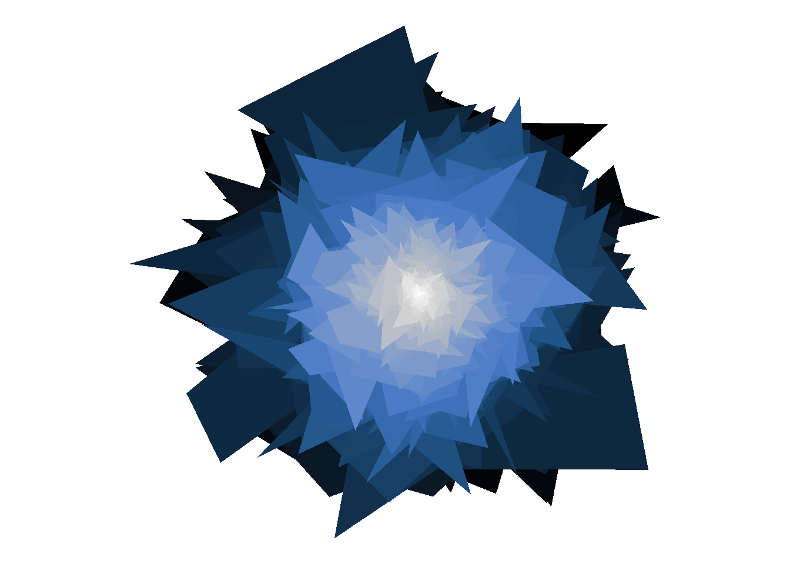
… is really quite lovely. Later on, I might decide that this little trick is worth bundling into another function, the system gains new flexibility, and the range of things you can do by playing around with it expands. But I think this is quite enough for now, so it’s time to move on to the most important step of all …
Tweet it!
Because what’s the point of making art if you can’t share it with people?
![]()